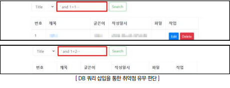
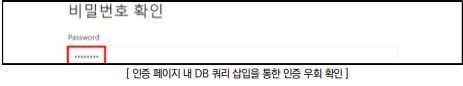
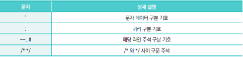
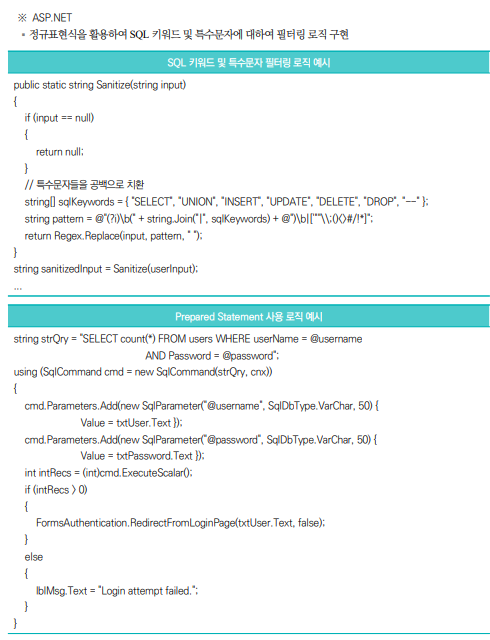

점검 목적
- 웹 애플리케이션 내 SQL문으로 해석될 수 있는 입력값 허용을 차단하고 운영 중인 데이터베이스에 대한
비인가된 접근 및 조작을 방지하여, 데이터 무결성과 보안성을 확보하기 위함
판단 기준
- 양호 : 임의로 작성된 SQL 쿼리 입력에 대한 적절한 검증을 통해 비정상적인 쿼리가 실행되지 않도록
하는 경우
- 취약 : 임의로 작성된 SQL 쿼리 입력에 대한 검증이 이루어지지 않아 비정상적인 쿼리가 실행되는 경우
조치 방법
- 소스코드 내 SQL 쿼리를 입력값으로 받는 함수나 코드를 사용할 경우, 임의의 SQL 쿼리 입력에 대한
검증 로직을 구현하여 서버에 검증되지 않는 SQL 쿼리요청 시 에러 페이지가 아닌 정상 페이지가
반환되도록 필터링 처리하고 웹방화벽에 SQL 인젝션 관련 룰셋을 적용하여 SQL 인젝션 공격을 차단함
점검 방법
- Step 1) 사용자 입력값 조건에 따른 참, 거짓 SQL 쿼리를 삽입하여, 응답의 변화(응답시간, 에러메시지, 응답 내
용 등) 유무 확인

Step 2) 인증 페이지(로그인, 비밀번호 검증 등) 내 참이 되는 SQL쿼리를 삽입하여 우회 유무 확인

조치 방법
1. SQL 쿼리 내 사용되는 문자열의 유효성을 검증하는 로직 구현
2. 아래와 같은 특수문자에 대하여 사용자 입력값으로 지정 금지

3. Prepared Statements를 사용하여 사용자 입력과 SQL 쿼리를 분리하여 처리
4. 시스템에서 제공하는 에러 메시지 및 DBMS에서 제공하는 에러코드가 노출되지 않도록 예외처리
5. 웹 방화벽(WAF)에 대하여 SQL Injection 관련 룰셋 추가
자바 특수문자 필터링 로직
public static String sanitize(String input) {
if (input == null) {
return null;
}
// 특수문자 및 키워드들을 공백으로 치환
String[] sqlKeywords = {"SELECT", "UNION", "INSERT", "UPDATE", "DELETE", "DROP", "--"};
String pattern = "(?i)\\b(" + String.join("|", sqlKeywords) + ")\\b|['\"\\\\;()<>#/*!]";
Pattern regex = Pattern.compile(pattern + "|--");
Matcher matcher = regex.matcher(input);
return matcher.replaceAll(" ");
}
... String sanitizedInput = sanitize(userInput);
Prepared Statement 로직
String sql = "SELECT * FROM users WHERE username = ?";
PreparedStatement preparedStatement = connection.prepareStatement(sql);
preparedStatement.setString(1, userInput);
... ResultSet resultSet = preparedStatement.executeQuery();
파라미터 바인딩 : 쿼리를 실행할 때, 쿼리 문자열과 사용자 입력값(파라미터)을 분리하여 처리하는 기법. 데
이터베이스는 쿼리 문자열을 미리 파싱하고 컴파일하며, 쿼리 실행 시점에 파싱된 쿼리 문자열에 파라미터를
바인딩하여 데이터를 전달하므로 데이터베이스는 파라미터를 데이터로만 인식함
ORM(JPA-Hibernate) 파라미터 바인딩 사용 예시
public class ItemService {
@PersistenceContext
private EntityManager em;
public List<Item> findItemsByUserInput(String userInput) {
// JPQL을 사용하여 SQL Injection 방지
String jpql = "SELECT i FROM Item i WHERE i.itemID > :userInput";
Query query = em.createQuery(jpql, Item.class);
query.setParameter("userInput", userInput);
return query.getResultList();
}
}
